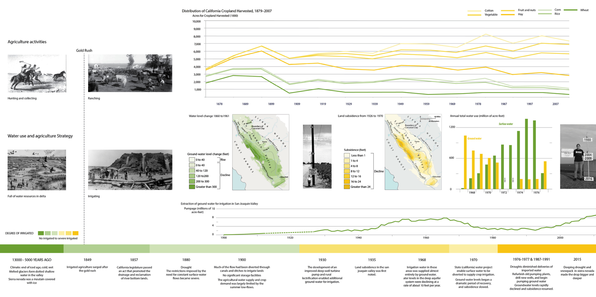
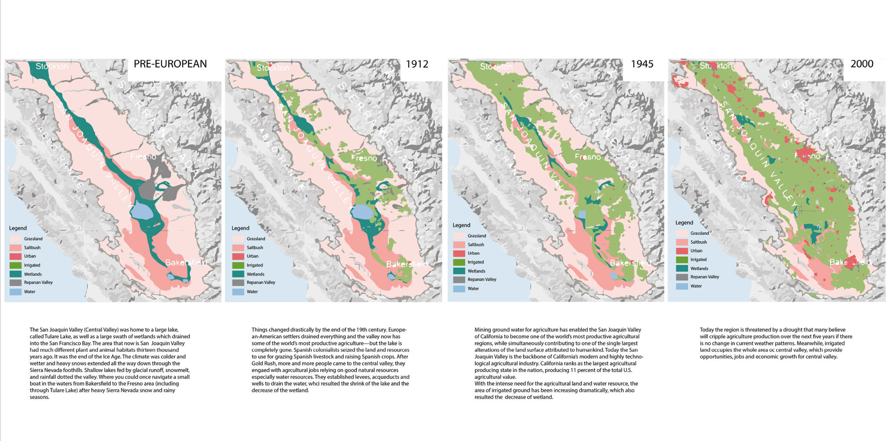

of the California landscapestarts with the process of plate tectonics, which has created a complex geology of sea-floor sediments, metamorphic, and volcanic rocks. These processes, under the influence of the cold California ocean current, developed the characteristic Mediterranean climate over the past 3 million years. California's native flora and fauna represent groups selected from the larger array of species adapted to the summer rainfall climate present before the Pliocene throughout western North America.
A series of timeline drawings below show the geological and ecological changes through time...
 Finding out ecological preservation through map below!